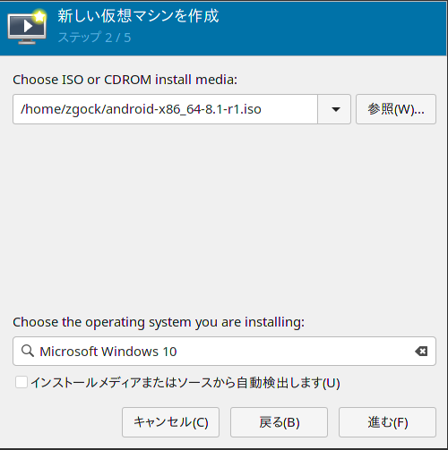
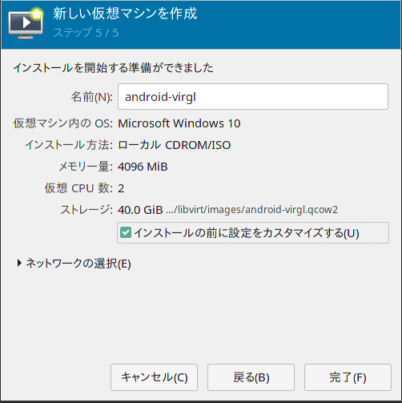
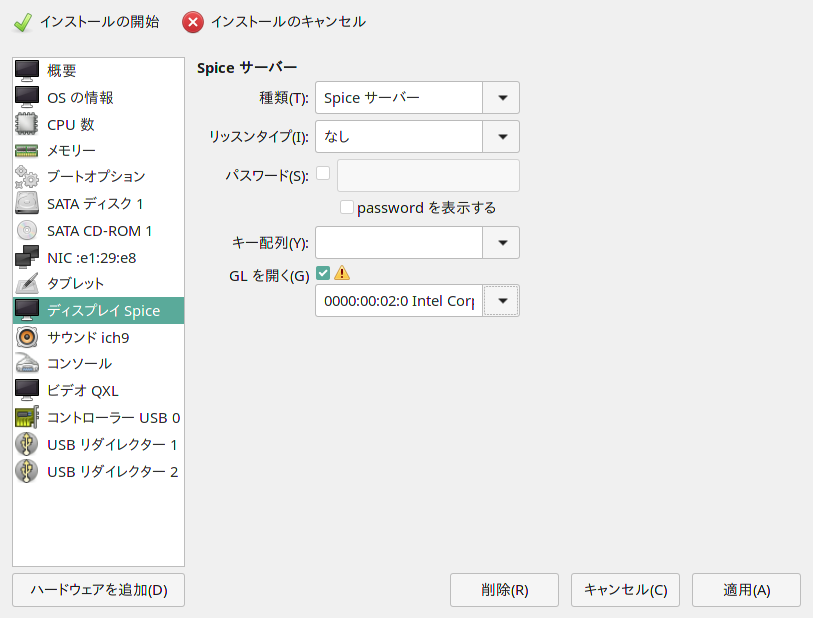
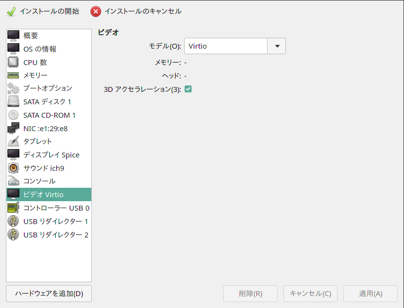
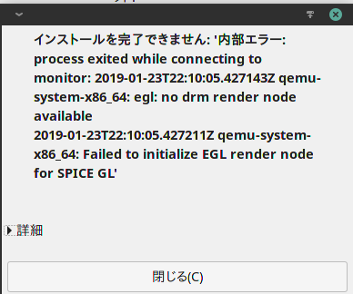
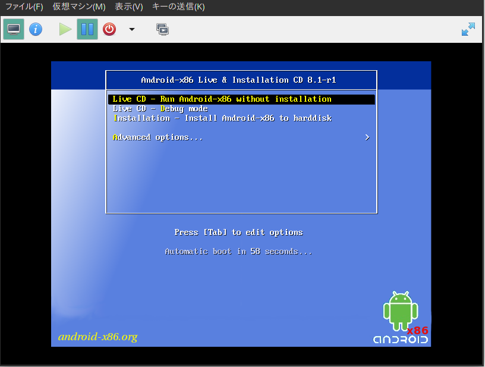
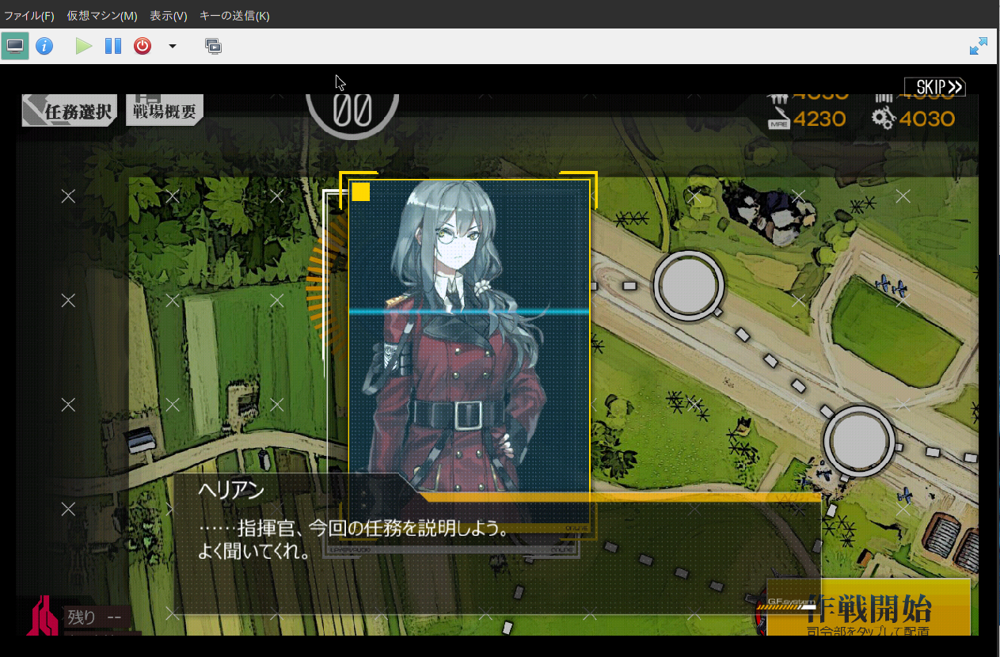
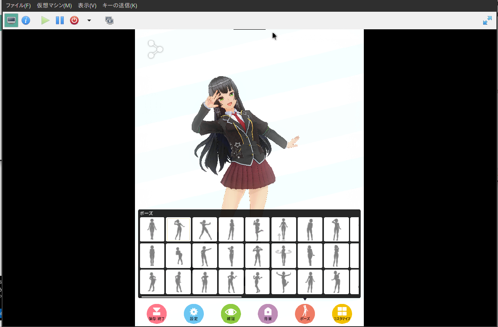

android-x86の8.1r1が出たので、KVM環境で動かしてみました。
Linuxデスクトップ上でAndroidアプリを動かす試みとしてはanboxとかもあり、これもコンテナの下で動くAndroidということで非常に興味深いプロジェクトですが、まだopenSUSE上でまともに動かすことに成功していないのと、この間arch上で動いているanboxを東海道らぐの会合で見ましたが、まだまともに動かないアプリも結構あり、じゃあ最近のKVM環境で動かしたらどうなんかなということで試してみました。
今回はGPUおたくらしくvirtio-gpu(VirGL3d)を使ってopenGL-ESを有効にしたandroid-x86を動かしてみます
virtio-gpu(VirGL3D)とは
VirGL3Dとは仮想環境でGPUを扱うための準仮想化システムであり、GPUパススルーやGPU共有と異なり、独自のAPIを持った独立GPUとして扱うものです。
VMWareやVirtualboxの仮想GPUなどとほぼ同じものと考えて良いでしょう
まだWindows Driverが未完成（openGLは動き始めたがDirectXが動かない）だったりと発展途上のプロジェクトではありますが、X11やAndoroidではそこそこまっとうに動くようになってきています
テスト環境
今回もパッケージが新しければ新しいほど良いという感じの実験なのでopenSUSE Tumbleweedを使います
- DELL Latitude E5470
- CPU: Intel Core i5 6200U
- GPU: Intel UHD Graphics 520
- Mem: 8GB
- OS: openSUSE Tumbleweed x86_64
- qemu: 3.1.0
例によってvirt-managerでVMの制御ができるようにまではなっている前提で。
ISOのダウンロード
android-x86公式から8.1r1のx86-64版isoをダウンロードします
ゲストの作成
virt-managerからisoを選んでゲストのインストールを行います
もともと古いPC等に入れて使うことを想定されていることもあり、デフォルトテンプレートで一番相性が良いテンプレートがWindows 10だったりしますのでそうします

あとは粛々とウィザードを最後まで進めて行けばOKですが、最後の「インストール前に設定を確認する」にチェックを入れてください

virtio-gpuを設定する
「インストール前に設定を確認する」にチェックを入れて完了すると、そのままVMの設定が開きますので、「ディスプレイ：Spiceを選びます」
ここでリッスンタイプを「なし」にして、「GLを開く」をONにすると、レンダリングを受け持つGPUが出てきますので、Intel HD Graphicsを選びます
残念ながら、2019-1-23現在、AMDのGPUはlibvirtからvirtio-gpuのレンダリングデバイスに指定しても動かないので注意してください
これはmesaの仕様で、GLSLシェーダーキャッシュをディスク上に作ろうとしますが、libvirtでは現在そのあたりを考慮せず存在しないディレクトリにキャッシュを作ろうとして起動に失敗します
（コマンドラインからqemuを直に呼べばいけると思いますが未検証）

続いて、ビデオを選び、「モデル」にvirtioを選んで3DアクセラレーションをONにします

これで「インストールを開始」を選べばandroid-x86のライブCDが起動するはずですが、時々libvirtのバグでEGLデバイスが確保的ないというエラーが出ることがあります

ディスプレイの設定画面に再度戻るとデバイスを設定したはずなのに、デバイスが「自動」になっていますので改めてデバイスを指定してください
あとは普通にライブが起動するはずなので、普通にインストールすればOKです

Android x86のインストール手順そのものはぐぐればいくらでも出てくると思いますので割愛します
動かしてみて
OSそのものはかなりサクサク動きます。
（正直手元の古いAndroid4.4タブレットより軽いんじゃないか説）
ゲーム類は、そもそも起動しないタイトルがあったり、マウス操作を受け付けないタイトルがあったりはしますが、マウス操作でいけるタイプのタイトルであれば予想以上に実用レベルで動きます
以下のスクリーンショットは、検証用に適当にPlayストアから拾ってきた「ドールズフロントライン」というゲームですが、割と軽めの2Dゲームということもあり全く問題なく動きました

スワイプ動作を受け付けないため、カメラ操作ができませんが、「カスタムキャスト」あたりのかなり重いタイトルでも動くには動いています

まとめ
VirGL3Dを使うことで、制約はあれこれありますが、openGL-ESが使える仮想android環境がopenSUSE TumbleweedのKVMで割と簡単に実現できますので、よろしければぜひ一度お試しください